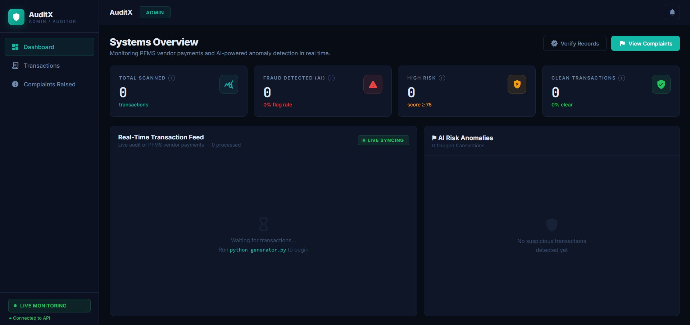

Hello, My name is
Rahul
Takale
AI Engineer & Software Developer
Building real-world AI, web and data-driven solutions. Experienced in developing scalable applications and AI-based projects through internships, hackathons and collaborative engineering projects.

ABOUT ME
Computer Science Undergraduate
Passionate about Technology
I am a Final Year B.Tech Computer Science Engineering Student Specializing in Artificial Intelligence and Analytics at MIT ADT University, Pune. I love building scalable web applications, AI-powered solutions and solving real-world problems through code.
AI Solution Architect
Designing intelligent systems using AI, Computer Vision and automation to solve real-world challenges.
Software Engineer
Building scalable web applications using modern frontend, backend and cloud technologies.
Research & Innovation
Exploring emerging technologies including LLMs, Machine Learning, IoT and intelligent automation.
Hackathon Finalist
Recognized in multiple national and international innovation challenges through impactful AI solutions.
My Expertise
TECHNOLOGY STACK
Technologies, tools and frameworks I use to build modern software solutions.Java Backend
Building scalable backend applications with object-oriented design and API development.
Python & AI
Developing AI-powered applications, automation workflows and intelligent systems.
Frontend Development
Creating responsive, modern and user-friendly web interfaces.
Databases
Managing structured data and integrating databases with applications.
Artificial Intelligence
Building AI solutions using machine learning, LLMs and computer vision.
Cloud & Dev Tools
Using cloud platforms and development tools for deployment and collaboration.
Portfolio Highlights
Projects That Solve Real Problems
Real-world software, AI and computer vision solutions built through internships, hackathons and independent development.
AI Powered CCTV Surveillance System for Kumbh Mela
Designed and studied an AI-powered CCTV surveillance solution for crowd management and public safety during large-scale religious gatherings. Explored the use of Python, OpenCV, object detection, people counting, and crowd density estimation techniques for analyzing CCTV video streams. My contribution included designing the system workflow, studying computer vision models for crowd monitoring, analyzing real-time alert mechanisms, and evaluating how AI can assist authorities in identifying overcrowded zones and unusual movement patterns. A key challenge was understanding scalable surveillance requirements for handling large volumes of video data, which was addressed through independent research on computer vision, video analytics, and smart monitoring systems.

AI & IoT Aeroponics System
Developed an AI and IoT-powered aeroponics system for sustainable urban farming that delivers nutrient-rich mist directly to plant roots, achieving up to 95% water savings compared to traditional agriculture. Built a web-based monitoring platform to visualize real-time sensor data, including temperature, humidity, nutrient levels, and water conditions. Integrated an LLM-powered plant assistant using Ollama to provide intelligent recommendations on plant health, nutrient management, and crop maintenance. My contribution included designing the system architecture, developing the monitoring dashboard, integrating IoT sensor data pipelines, and implementing the AI assistant for decision support. The project was recognized among the Top 5 teams in an international innovation challenge featuring participants from South Africa, South Korea, USA, and Brazil.

Intelligent Fitness Posture Detection System
Developed a computer vision-based fitness posture detection system using Python, OpenCV, and MediaPipe Pose to analyze body movements during exercises. Implemented pose landmark detection and angle calculation techniques to track joint positions and evaluate exercise form in real time. Designed logic for posture validation, movement tracking, and repetition counting to provide corrective feedback during workouts. My contribution involved integrating pose estimation models, processing live video streams, and developing algorithms to identify incorrect posture patterns. A key challenge was achieving accurate posture analysis across different body positions, which was addressed through extensive testing and optimization of landmark-based calculations.

AuditX – AI & Blockchain Based Financial Fraud Prevention System
Developed a real-time financial transaction monitoring system that combines Artificial Intelligence and Blockchain to prevent fraud before transactions are executed. Built a modular architecture using React, FastAPI, Python, Firebase, and Solidity-based smart contracts. Implemented an Isolation Forest anomaly detection model to assign fraud risk scores and identify suspicious transaction patterns in real time. Designed smart contract rules for automated validation of budget limits and authorization checks, while blockchain logging ensured tamper-proof transaction records. The key challenge was integrating AI-based fraud detection with rule-based validation to provide low-latency, real-time decision making.
Professional Journey
Experience That Built My Foundation
Practical exposure through internship work, web development, frontend implementation and real-world project collaboration.

Development Intern
INNOBYTES (Erfinden Technologies Pvt. Ltd.)
Pimpri Chinchwad, Maharashtra · 2025
BizGrowth
- Developed a responsive business networking website using HTML, CSS and JavaScript.
- Designed modern UI pages and business listing modules.
- Improved responsiveness and frontend performance across devices.
InnoHubs
- Built responsive web application components using modern web technologies.
- Assisted in frontend integration, testing and debugging.
- Contributed to website optimization and user experience improvements.


Technical Intern
Red Crest Charitable Trust
Jun 2025 – Jul 2025 · 2 mos
Low-Cost IoT Monitoring Device
- Assisted in development and testing of an IoT monitoring device for smart agriculture.
- Analyzed sensor-generated agricultural data to monitor environmental conditions.
- Contributed to documentation, testing workflows and performance evaluation.
Achievements
HACKATHONS, PROGRAMS & MILESTONES
A collection of my real-world innovation journeys, hackathon experiences, leadership roles and technical milestones.


Indradhanu International Grand Challenge Finale
PCCOE · AI for Climate Change
Our team CODEXCELLENCE was shortlisted among the Top 20 teams and presented Seed2Sustain, an AI-driven climate-smart aeroponics solution for urban sustainability.
- Designed a soil-less aeroponics system for sustainable farming.
- Integrated IoT-based real-time monitoring for plant conditions.
- Applied AI-driven insights for plant health and system reliability.
- Aligned the solution with UN SDGs for sustainability and climate action.


PRISM Sociothon 2025
BRACT’s VIT Bibwewadi, Pune
Led team Sync4Tech under the theme “Tech for a Sustainable Planet” and proposed CarbonVision, an AI-powered industrial emission monitoring system.
- Analyzed chimney/drone video feeds using computer vision.
- Estimated smoke density, color and emission levels.
- Planned real-time dashboards, alerts and trend analytics.
- Explored weather API integration for pollution dispersion prediction.


Kumbathon 2026
MIT ADT University · National Startup Day
Team Triveni Tech showcased an AI-Based Smart CCTV Surveillance and Command Centre System for large-scale events like Kumbh Mela.
- Detected crowd density risks and unsafe situations.
- Converted CCTV feeds into real-time decision support systems.
- Built alert flow for a centralized admin dashboard.
- Received encouraging jury feedback for future development.


MIT ADT AI Grand Challenge 2026
Blockchain & AI Innovation Category
Developed AuditX, an AI and Blockchain-powered financial fraud prevention system designed to detect suspicious transactions before execution through real-time risk analysis, smart contract validation, and tamper-proof blockchain logging.
- Implemented Isolation Forest-based anomaly detection for fraud risk scoring.
- Designed Solidity smart contract rules for transaction validation.
- Integrated blockchain logging to ensure transaction integrity and transparency.
- Recognized among the Top 7 teams in the Blockchain category at MIT ADT AI Grand Challenge.


UNESCO Youth Hackathon 2025
Global Platform · SDG Innovation
Built NutriCheck, an AI-powered nutrition label analysis system that helps users decode food packaging and make healthier choices.
- Used Flask for AI and OCR processing.
- Built frontend using React and Tailwind CSS.
- Integrated Tesseract OCR and machine learning for nutrient detection.
- Presented visual health insights through interactive charts.


Campus Ambassador
Parikshak.ai · Growth Partner Program
Joined Parikshak.ai as a Campus Ambassador to contribute toward student interview preparation, career growth and AI-driven learning awareness.


Google Cloud Arcade Facilitator Program 2024
Premium Plus Milestone Level
Completed hands-on Google Cloud labs covering Kubernetes, AI/ML, cloud security and Google Cloud services.
Contact
Let’s Build Something Great
Open to internships, project collaborations, hackathons and software development opportunities.